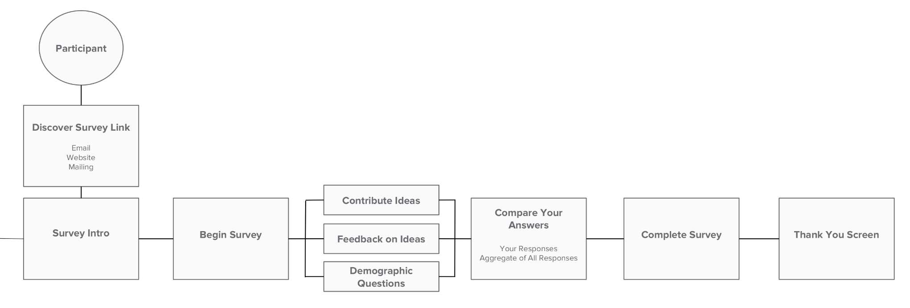

IdeaMapr is a startup I founded to help local governments collaborate with their communities on civic decisions.
Local governments have the most direct impact on our daily lives. They make decisions that affect everything from what grocery stores we can access and how we commute to work to what types of parks our kids play at. Governments consider hundreds of these decisions every year and need to gather input from the public on all of them. These civic decisions are a tremendous opportunity for people to shape the communities they live in.
We built a simple online survey tool to help these communities to work through complex civic decisions.
Project Role
Founder, Product Management, UX Design, Writing
Project Duration
3 Years
Challenge
Governments make hundreds of civic decisions that require input from the public every year. If government fails to sufficiently involve the public, many of these projects fail to get approval and have to start over again.
When cities do in-person engagement, they may only get a handful of people to give feedback even on projects that will impact millions, and that feedback is often not very helpful. Online tools have helped cities get a larger volume of feedback, but have done little to improve the quality of that feedback. I knew about this challenge because I worked on it at several different organizations from both public-first and government-first approaches. Companies that were working on the problem initially thought that the space was an exciting opportunity, but eventually moved on to easier problems.
I felt like it was still a problem worth addressing and started my own company to continue to work on the problem. I won a grant from the Knight Foundation to build a prototype and launched into research.
agile process
We decided to use an agile UX and development approach. As the first step, I worked on discovery research and interviewed stakeholders. Then, I created and rapidly refined a series low-fidelity prototypes based on research insights. At that point, I brought engineers into the process, and had them join me for daily standups, sprint planning, and retrospectives. All of the research was open to the team, and as I continued research during the dev sprints, I also included the engineers in the research process and shared new insights as they came in. We worked in 2-week sprints and I functioned as the Product Owner. We started by coding basic useable versions of each section of the product, then we would test and gather feedback from our partners and start to add functionality in subsequent sprints.
competitive analysis
It was important to not only look at the tools that agencies were already using but also their in-person process. For online tools, the big players are MetroQuest and Bang the Table. At the lower price point is SurveyMonkey and Google Forms. Engagement levels move from shallow to deep, and as they go deeper, the tools are more complicated, take longer to set up, and jump dramatically in price.
mood
Powerful
mood
Established
mood_bad
Expensive
mood
Well known
mood
Quick to create
mood_bad
Limited questons
mood
Google ecosystem
mood
Quick to create
mood_bad
Limited questons
The concept for IdeaMapr was to fill the in-between space, to create something that would be as easy-to-use, quick to set up, and accessible as SurveyMonkey, but also would enable deeper engagement around complex decisions like more expensive tools.
user research
Most of the tools in the space were not designed with the perspective of the practitioners who run public involvement processes. I wanted to do as much as I could to build with and not for, so I partnered with 5 municipalities to collaborate on the design of the tool. I interviewed 40+ people over the research process.
My three major insights from this research were that:
1
Deeper public involvement is essential
2
In-person meetings and existing online tools fail to deliver desired results
3
Having to mix and match current online tools was too time-consuming
Planners are motivated to engage the public because they need public support to get their projects implemented. They have to demonstrate to city council that they reached out to the public, explained the consequences of the decision at hand, and made an effort to address any concerns that were brought up. When citizens are not properly involved and complain to council, projects can get delayed or even cancelled.
Planners primarily gather feedback through in-person meetings, but they are very inefficient. Governments spend lots of money to invite tens of thousands of people to in-person meetings, but may only get ten people to attend. Online surveys can receive hundreds or even thousands of responses at a much lower cost.
When planners do use online tools, they have to combine many different tools for different aspects of projects, such as budgeting tools, survey tools, and forums. They have to spend a lot of time learning how to use these tools and pasting results together into a single project report, and it creates more work for the public to have to give feedback separately on all these different platforms as well. Planners frequently used ideation tools (focused on asking broad qualitative questions like “How should we improve City XYZ?”) and liked that they inspired a lot of discussion among the public, but disliked that these comment threads tend to go off-topic and that they do not produce structured and readily useable feedback.
user personas
Survey Creator
mood
Reach new groups
mood
Educate residents
mood_bad
Expensive tools
Survey Participant
mood
Learn about project
mood
Voice my concerns
mood_bad
Inconvenient meetings
user flows

initial concept
IdeaMapr was originally set up as a decision game based on dialogue mapping, a multi-round process of collecting questions, answers, and pros and cons to those answers. Instead of coming up with questions beforehand, admins would start an engagement by setting a challenge and then asking participants what questions we would need to ask in order to address that challenge. Participants moved through highly structured stages, so they could cover more complex topics with less confusion.
1st Round of Engagement
2nd Round
2nd Prototype Sketch
Pros and Cons Sketch
3rd Prototype - Adding Ideas
Adding Pros and Cons
Usability Testing - Early Prototypes
I got a lot of positive feedback about the game, people liked that it had an easy to follow structure and enabled them to get deeper feedback than other online tools. The downside was that the game was too different than government’s overall engagement approach. The online tool would only be part of a larger effort that involved in-person meetings and workshops and it was important that online wouldn’t become a totally separate process and conversation. Online tools need to augment the existing process not become their own process.
a new direction
IdeaMapr needed to fit into the overall engagement process instead of being a separate process. In order to accomplish this, admins would need to setup the questions beforehand and those questions would have to be the same type of questions that would be discussed in an in-person workshop or meeting.
later prototypes
I designed different question types that combined the most common tools that planners used to cover a variety of scenarios. The ability to mix and match question types within IdeaMapr allows planners to ask the same type of question online as in-person. This allowed planners to verify results from their smaller in-person meetings against a larger group of online participants. They could also integrate the results of online engagement more easily into their overall engagement report for the project.
Admin Idea List
Admin Question List
Participant Budget Question
Participant Pro/Con Question
usability testing - Later Prototypes
After the switch to a more traditional survey format with predetermined questions, the tool did a much better job of relating to the overall engagement process. Admins could select the question types that matched the project they were working on and continue to make edits along the way. The traditional survey format felt familiar to both admins and participants, so they move straight into an engagement without having to explain the tool.
launch
Once the product was built out, I went back to the original five cities I had worked with and discussed selling IdeaMapr to them as an enterprise product on an annual subscription. After hearing the same things in every sales call, I realized that city planners weren’t the right audience since individual planners don’t work on enough projects to make the tool useful enough for them to try to go through procurement and that cities tend to fund projects on a case-by-case basis rather than from a general fund.
Through my previous research, I had learned that many cities employ engagement consultants to work on projects with them. This group works on many more engagement projects and values engagement more than the average planner, which makes them more likely to utilize online tools. To target this audience, I launched a newsletter called the Citizen Engagement Journal that talked about procurement, problems in the engagement field, and tips from successful engagement consultants. This attracted my audience due to the lack of expert blogs about engagement, and many planners and others in the field do not have very deep training in specialized areas such as online engagement. This newsletter not only served as good content marketing, but also allowed me to interview engagement consultants and learn even more about their business so I could better market IdeaMapr to them.
As a result of these interviews, I decided to change my pricing strategy from an annual enterprise subscription to a per-project fee so that it would better fit how engagement consultants do business. This led to my first clients.
Budget Question Screenshot
Pro/Con Question Screenshot
Map Question Screenshot
Admin Idea List Screenshot
real world projects
IdeaMapr was used in real world public involvement projects by the City of Sacramento, City of Miami Beach, Idaho Transportation Department, and others.
The most successful project involved over 1000 participants in improving the 16th Street Corridor in Sacramento.
lessons
From trying to sell IdeaMapr directly to cities as an enterprise product, I learned that this style of sales was not a good fit for my lean, self-funded company. If you want to win government contracts through the procurement process, you need to hire skilled salespeople and have enough cash reserves to weather the long wait times. The enterprise sales process also does not fit the model of how engagement projects are actually funded, namely, on a project-by-project basis rather than from a general departmental fund. My shift to per-project pricing worked much better for my clients, but I still had to spend a lot of time closing sales and onboarding clients over email and phone because the product did not have self sign-up and payment.
From my extensive research and experience selling IdeaMapr, I concluded that the best way forward would be to make it a more widely usable engagement tool rather than a government-specific tool. Governments use popular general-purpose tools like Trello, Slack, Gmail, and SurveyMonkey because they work well, are very inexpensive, and have a low barrier to entry. By opening up the client base, I would be able to secure a high enough project volume to fund the improvements I would need to make IdeaMapr a trusted and functional tool that would also work for government users.